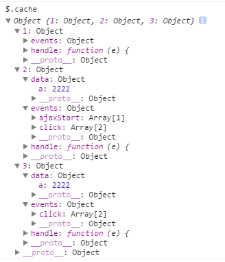

jquery中对于事件的处理中主要包含对dom对象的事件代理（其中包含事件的添加和触发）、模拟事件冒泡的过程实现事件触发，其中依据数据缓存作为事件处理的基础。
对于代理事件的处理过程，jquery对事件的处理跟数据缓存的处理方式一样，以dom节点为管理对象。
对于节点的数据缓存中除了data数据，也有event数据，每个节点通过on添加绑定不同类型的事件并将方法缓存到event上，当节点进行事件的执行或者冒泡的时候，从event缓存中取出数据并进行target节点--->this节点的dom遍历，当遍历的节点满足代理节点的选择条件，便模拟该节点响应事件，响应后如果允许冒泡，则继续上溯事件对象，直到该this节点对象；
数据缓存中除了event数据还有一个handler数据，该数据为该节点上事件的触发器，即该方法可以响应绑定所有的事件，然后通过event的type进行缓存事件查找并响应。
对于模拟冒泡，主要发生在trigger方法中，可以实现人工手动触发事件，该处为了兼容性，jquery并未使用dispatch（fireObject）进行原生事件的触发，而是采用this节点-->html节点之间的节点查询，查询缓存中节点上绑定的事件的，实现事件的手动冒泡响应。对于其中的节点，通过获取节点缓存的handler方法进行手动触发，实现事件响应。
个人归类：事件通过浏览器触发方式的处理是采用事件冒泡的机制，从target到this之间节点的遍历事件响应，执行完成以后，由浏览器继续将事件冒泡，处理同前，运用了浏览器的功能，因为冒泡不会不兼容；事件人为触发，也是节点遍历，只是从target到window之间的事件查询的触发，因为兼容问题没有运用了浏览器的功能，实现了冒泡的模拟。
代码部分：
/**
* jquery的事件处理体系：
* jquery中对待事件队里的处理handleObj采用数据缓存的方式处理，即将事件全部缓存到该dom节点所对应cache中events字段中，
* 并将各类事件通过不同的key值进行保存，各个key对应的value为事件处理数组，数组中以object进行管理，保存参数、函数等等信息，
* 如此可以保证一个事件可以对应多个处理函数，且数据以及处理方法全部被保存下来。
* 同时所有事件使用一个引导函数，即events下的handler字段对应的函数，当该dom节点执行或者冒泡得到任何事件的时候，引导函数就会
* 查询该节点对应的cache中的events的值，并对应事件type查找方法，然后通过event.target->this之间dom节点遍历并判断是否满足事件代理
* 的选择器条件进行相应方法的执行。
* 但是对于手动触发事件的情况，此处并未使用原生dispatch或者fireObject方法（大概因为兼容性吧），而是在该触发节点上溯
* 查找节点并检查cache中events，进行选择器筛选，完成事件方法的执行。其实也是模拟事件冒泡的的过程
*
* 细节1：对于dom本身事件，处理函数排在event.eventType的后面，代理事件前置，并记录代理事件的个数delegateCount
*/
jQuery.event = {
add: function(elem, types, handler, data, selector) {
var elemData, eventHandle, events,
t, tns, type, namespaces, handleObj,
handleObjIn, quick, handlers, special;
// Don't attach events to noData or text/comment nodes (allow plain objects tho)
if (elem.nodeType === 3 || elem.nodeType === 8 || !types || !handler || !(elemData = jQuery._data(elem))) {
return;
}
// Caller can pass in an object of custom data in lieu of the handler
if (handler.handler) {
handleObjIn = handler;
handler = handleObjIn.handler;
selector = handleObjIn.selector;
}
// Make sure that the handler has a unique ID, used to find/remove it later
if (!handler.guid) {
handler.guid = jQuery.guid++;
}
// Init the element's event structure and main handler, if this is the first
events = elemData.events;
if (!events) {
elemData.events = events = {};
}
eventHandle = elemData.handle;
if (!eventHandle) {
//该函数为事件触发器函数，dom结点的所有事件均会执行该函数
elemData.handle = eventHandle = function(e) {
// Discard the second event of a jQuery.event.trigger() and
// when an event is called after a page has unloaded
return typeof jQuery !== "undefined" && (!e || jQuery.event.triggered !== e.type) ?
jQuery.event.dispatch.apply(eventHandle.elem, arguments) :
undefined;
};
// Add elem as a property of the handle fn to prevent a memory leak with IE non-native events
eventHandle.elem = elem;
}
// Handle multiple events separated by a space
// jQuery(...).bind("mouseover mouseout", fn);
types = jQuery.trim(hoverHack(types)).split(" ");
for (t = 0; t < types.length; t++) {
tns = rtypenamespace.exec(types[t]) || [];
type = tns[1];
namespaces = (tns[2] || "").split(".").sort();
// If event changes its type, use the special event handlers for the changed type
special = jQuery.event.special[type] || {};
// If selector defined, determine special event api type, otherwise given type
type = (selector ? special.delegateType : special.bindType) || type;
// Update special based on newly reset type
special = jQuery.event.special[type] || {};
// handleObj is passed to all event handlers
handleObj = jQuery.extend({
type: type,
origType: tns[1],
data: data,
handler: handler,
guid: handler.guid,
selector: selector,
quick: selector && quickParse(selector),
namespace: namespaces.join(".")
}, handleObjIn);
// Init the event handler queue if we're the first
handlers = events[type];
if (!handlers) {
handlers = events[type] = [];
handlers.delegateCount = 0;
// Only use addEventListener/attachEvent if the special events handler returns false
if (!special.setup || special.setup.call(elem, data, namespaces, eventHandle) === false) {
// Bind the global event handler to the element
if (elem.addEventListener) {
elem.addEventListener(type, eventHandle, false);
} else if (elem.attachEvent) {
elem.attachEvent("on" + type, eventHandle);
}
}
}
if (special.add) {
special.add.call(elem, handleObj);
if (!handleObj.handler.guid) {
handleObj.handler.guid = handler.guid;
}
}
// Add to the element's handler list, delegates in front
if (selector) {//对于代理事件，在队列里将新的事件插入到最后一个代理事件后面，保证代理事件和本身事件的归类排放
handlers.splice(handlers.delegateCount++, 0, handleObj);
} else {
handlers.push(handleObj);//自身事件push到数组以后
}
// Keep track of which events have ever been used, for event optimization
jQuery.event.global[type] = true;
}
// Nullify elem to prevent memory leaks in IE
elem = null;
},
//人工模拟冒泡
trigger: function(event, data, elem, onlyHandlers) {
// Don't do events on text and comment nodes
if (elem && (elem.nodeType === 3 || elem.nodeType === 8)) {
return;
}
......
if (type.indexOf(".") >= 0) {
// Namespaced trigger; create a regexp to match event type in handle()
namespaces = type.split(".");
type = namespaces.shift();
namespaces.sort();
}
if ((!elem || jQuery.event.customEvent[type]) && !jQuery.event.global[type]) {
// No jQuery handlers for this event type, and it can't have inline handlers
return;
}
// Caller can pass in an Event, Object, or just an event type string
event = typeof event === "object" ?
// jQuery.Event object
event[jQuery.expando] ? event :
// Object literal
new jQuery.Event(type, event) :
// Just the event type (string)
new jQuery.Event(type);
event.type = type;
event.isTrigger = true;
event.exclusive = exclusive;
event.namespace = namespaces.join(".");
event.namespace_re = event.namespace ? new RegExp("(^|\\.)" + namespaces.join("\\.(?:.*\\.)?") + "(\\.|$)") : null;
ontype = type.indexOf(":") < 0 ? "on" + type : "";
// Handle a global trigger
if (!elem) {
// TODO: Stop taunting the data cache; remove global events and always attach to document
cache = jQuery.cache;
for (i in cache) {
if (cache[i].events && cache[i].events[type]) {
jQuery.event.trigger(event, data, cache[i].handle.elem, true);
}
}
return;
}
// Clean up the event in case it is being reused
event.result = undefined;
if (!event.target) {
event.target = elem;
}
// Clone any incoming data and prepend the event, creating the handler arg list
data = data != null ? jQuery.makeArray(data) : [];
data.unshift(event);
// Allow special events to draw outside the lines
special = jQuery.event.special[type] || {};
if (special.trigger && special.trigger.apply(elem, data) === false) {
return;
}
// Determine event propagation path in advance, per W3C events spec (#9951)
// Bubble up to document, then to window; watch for a global ownerDocument var (#9724)
eventPath = [
[elem, special.bindType || type]
];
if (!onlyHandlers && !special.noBubble && !jQuery.isWindow(elem)) {
bubbleType = special.delegateType || type;
cur = rfocusMorph.test(bubbleType + type) ? elem : elem.parentNode;
old = null;
for (; cur; cur = cur.parentNode) {
eventPath.push([cur, bubbleType]);
old = cur;
}
// Only add window if we got to document (e.g., not plain obj or detached DOM)
if (old && old === elem.ownerDocument) {
//构建dom队列用于获取各个分支的缓存中的事件
eventPath.push([old.defaultView || old.parentWindow || window, bubbleType]);
}
}
// Fire handlers on the event path
for (i = 0; i < eventPath.length && !event.isPropagationStopped(); i++) {
cur = eventPath[i][0];
event.type = eventPath[i][1];
handle = (jQuery._data(cur, "events") || {})[event.type] && jQuery._data(cur, "handle");
if (handle) {
handle.apply(cur, data);
}
// trigger方法并未采用createEvent|dispatchEvent的方式进行事件的手动触发，而是采用在触发点上溯树节点
// 并从事件缓存中查找各个树对应的事件方法，并手动执行，效率应该和原生触发差不多。
handle = ontype && cur[ontype];
if (handle && jQuery.acceptData(cur) && handle.apply(cur, data) === false) {
//此处，因为不是系统方式的手动触发事件并处理相关事件方法，所以对于采用on***属性添加的事件方法，在该处
//手动执行
event.preventDefault();
}
}
event.type = type;
// If nobody prevented the default action, do it now
if (!onlyHandlers && !event.isDefaultPrevented()) {
if ((!special._default || special._default.apply(elem.ownerDocument, data) === false) &&
!(type === "click" && jQuery.nodeName(elem, "a")) && jQuery.acceptData(elem)) {
if (ontype && elem[type] && ((type !== "focus" && type !== "blur") || event.target.offsetWidth !== 0) && !jQuery.isWindow(elem)) {
if (old) {
elem[ontype] = null;
}
// Prevent re-triggering of the same event, since we already bubbled it above
jQuery.event.triggered = type;
elem[type]();
jQuery.event.triggered = undefined;
if (old) {
elem[ontype] = old;
}
}
}
}
return event.result;
},
//冒泡到节点的代理事件的处理
dispatch: function(event) {
// Make a writable jQuery.Event from the native event object
event = jQuery.event.fix(event || window.event);
var handlers = ((jQuery._data(this, "events") || {})[event.type] || []),
delegateCount = handlers.delegateCount,
args = [].slice.call(arguments, 0),
run_all = !event.exclusive && !event.namespace,
special = jQuery.event.special[event.type] || {},
handlerQueue = [],
i, j, cur, jqcur, ret, selMatch, matched, matches, handleObj, sel, related;
args[0] = event;
event.delegateTarget = this;
if (special.preDispatch && special.preDispatch.call(this, event) === false) {
return;
}
if (delegateCount && !(event.button && event.type === "click")) {
// Pregenerate a single jQuery object for reuse with .is()
jqcur = jQuery(this);
jqcur.context = this.ownerDocument || this;
// cur = cur.parentNode 实现节点上溯，并将查询到的满足条件的事件函数，
//不管是代理事件还是本身事件，push到handlerQueue,最后遍历执行。
for (cur = event.target; cur != this; cur = cur.parentNode || this) {
// Don't process events on disabled elements (#6911, #8165)
if (cur.disabled !== true) {
selMatch = {};
matches = [];
jqcur[0] = cur;
for (i = 0; i < delegateCount; i++) {
handleObj = handlers[i];
sel = handleObj.selector;
if (selMatch[sel] === undefined) {
selMatch[sel] = (
handleObj.quick ? quickIs(cur, handleObj.quick) : jqcur.is(sel)
);
}
if (selMatch[sel]) {
matches.push(handleObj);
}
}
if (matches.length) {
handlerQueue.push({
elem: cur,
matches: matches
});
}
}
}
}
// Add the remaining (directly-bound) handlers
if (handlers.length > delegateCount) {
handlerQueue.push({
elem: this,
matches: handlers.slice(delegateCount)
});
}
// 遍历执行handlerQueue
for (i = 0; i < handlerQueue.length && !event.isPropagationStopped(); i++) {
matched = handlerQueue[i];
event.currentTarget = matched.elem;
for (j = 0; j < matched.matches.length && !event.isImmediatePropagationStopped(); j++) {
handleObj = matched.matches[j];
if (run_all || (!event.namespace && !handleObj.namespace) || event.namespace_re && event.namespace_re.test(handleObj.namespace)) {
event.data = handleObj.data;
event.handleObj = handleObj;
ret = ((jQuery.event.special[handleObj.origType] || {}).handle || handleObj.handler)
.apply(matched.elem, args);
if (ret !== undefined) {
event.result = ret;
if (ret === false) {
event.preventDefault();
event.stopPropagation();
}
}
}
}
}
// Call the postDispatch hook for the mapped type
if (special.postDispatch) {
special.postDispatch.call(this, event);
}
return event.result;
}
}
事件缓存数据结构：

在$.cahce中，节点上的事件全部保存在events上，并进行事件类型的分类保存，每个分类事件都是数组保存，数组再次保存object，object保存了执行函数，执行参数，代理对象的选择器。。。